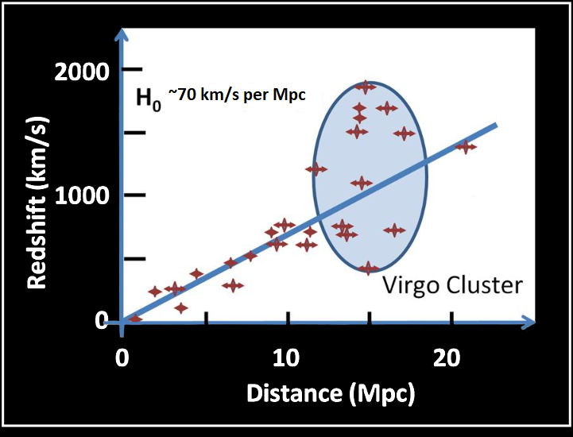

1926 - 1929
The First Look Into An Expanding Universe
In 1926, while developing a classification system for galaxies, Edwin Hubble discovered that if a light source is moving away from an observer, the light source's spectral lines are shifted toward longer wavelengths. This shift moves the spectral lines towards the red end of the absorption spectrum and was therefore proclaimed by Hubble as a "red shift." (Figure 2).
Suppose a light source is moving away from us with a spectral line at a wavelength lambdarest of 500 nanometres that is red-shifted to a wavelength, lambdaobserved of 505 nanometres. Therefore Edwin discovered we can calculate the change in wavelength (delta lambda) to be +5 nanometres and the doppler shift (z) to be 0.01.
Edwin Hubble then used his discovery of the red shift combined with the doppler shift to find the velocity of these galaxies. He discovered that if the light source is moving at a small fraction of the speed of light, then the velocity (v) it is moving away from is given by:
Once he measured the velocity that galaxies are moving with respect to earth, he calculated from the Doppler shift of their spectral lines and plotted it against their distance. Once he plotted the observational data into a graph he saw the following relationship: (Figure 3).

Fig. 3 - Nearby galaxies in the Local Group, which are gravitationally bound to the Milky Way, have been excluded from the diagram.
As Edwin observed, he was able to evidently see all the galaxies moving away from us, proving the universe is expanding. He was able to identify the apparent relationship between the recessional velocity and the distance of a galaxy, which is now known as Hubble’s Law as a homage to Edwin Hubble for making this groundbreaking discovery.
This velocity-distance relationship Hubble published in 1929 clearly indicates that once we look beyond the gravitational effects of close galaxies within the local group, galaxies are moving away from one another. Not only are they moving away but the more distant galaxies appear to be moving away faster than closer ones. Ultimately proposing the first finite proof that the universe is expanding and that there is a clear relationship between the recessional velocity and the distance of a galaxy. The other key point arising from the relation is that if we go back in time galaxies must have been closer together, and the universe was not as vast. If you extrapolate back far enough, the Universe must have been concentrated at a point in space, helping to confirm the Big Bang theory, which proposes that the universe began as a singularity and has been expanding ever since. It also provided evidence that the universe is not static but is constantly changing and evolving.
However, one crucial question arose due to this discovery: What caused this acceleration?